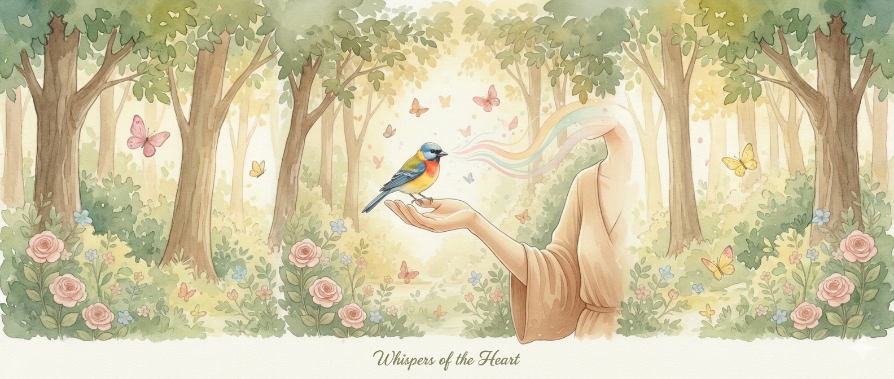

Animals don't just observe the world they experience it with a profound wisdom that often eludes the human mind. Every behaviour, every gaze, every nudge carries a message waiting to be heard.
Telepathic communication is the art of tuning into your animal's thoughts, emotions and physical sensations. Through a meditative state, I connect with their energy and translate what they're experiencing into words with honesty, clarity and love. This practice works across any distance; whether your companion is beside you or has crossed the Rainbow Bridge, the connection remains strong.
We offer Animal Telepathy in two formats so you can choose what works best for you and your companion.
A detailed written conversation delivered via email or WhatsApp within 24–48 hours. Perfect when you prefer to sit with the insights in your own time.
Real-time conversation via phone or Zoom with unlimited questions. Ideal when you want immediate clarity and the chance to ask follow-ups on the spot.
Choose Offline or Online when you book. We'll confirm everything over WhatsApp.
Book This Session